15 screenshots of the real VibeRails interface. Click any image for its full-resolution PNG. All project names, cards, activity, code metrics, and terminal output use fictional demo data.
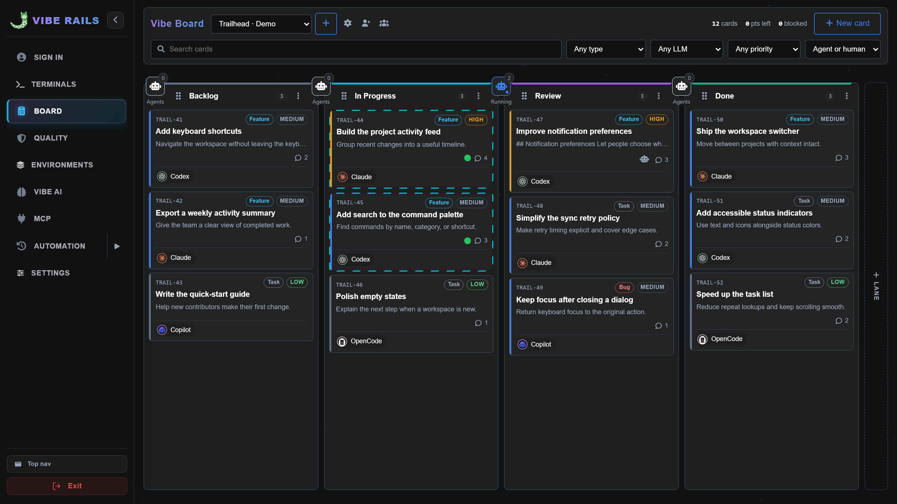
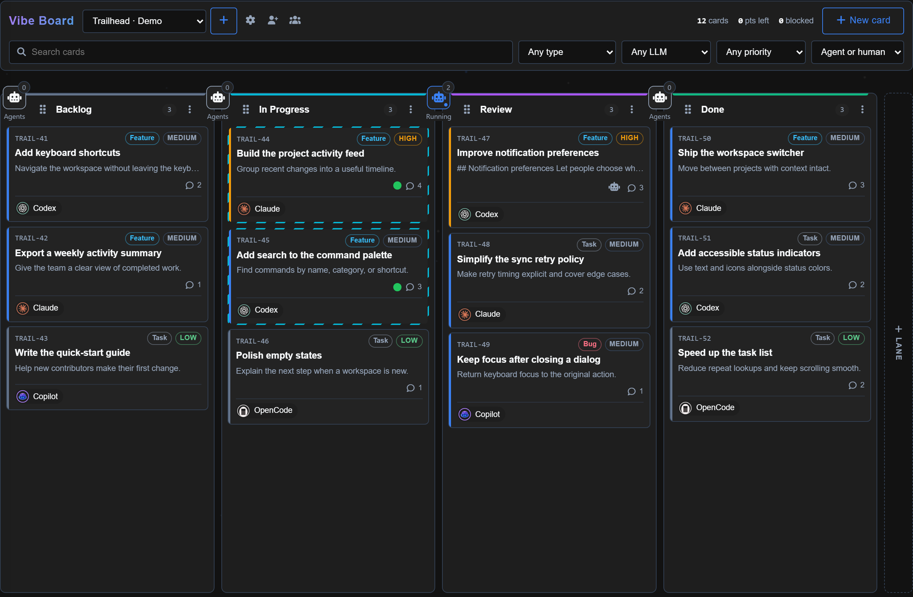
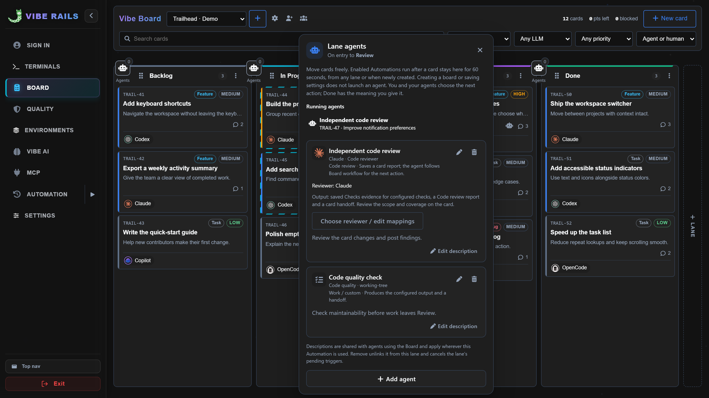
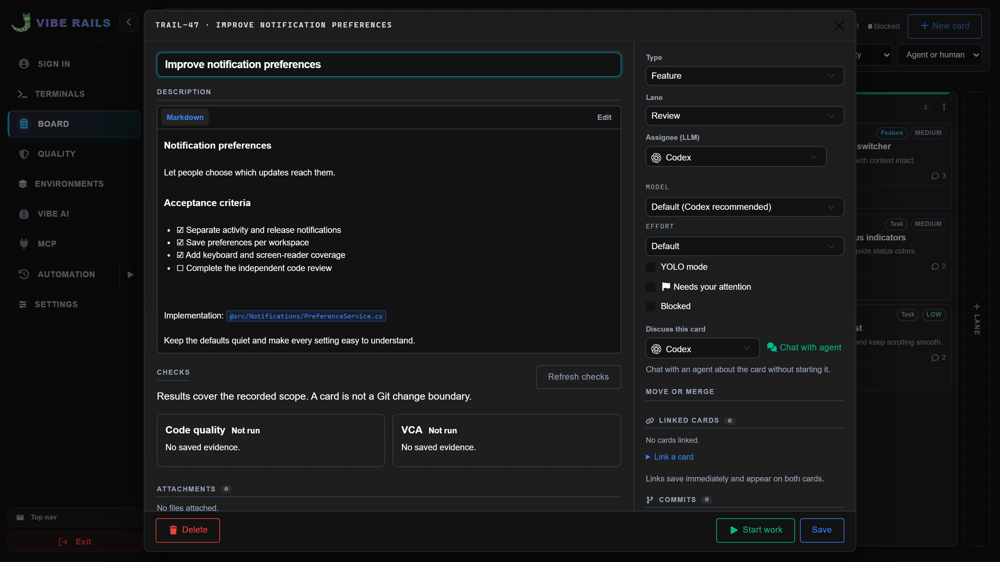
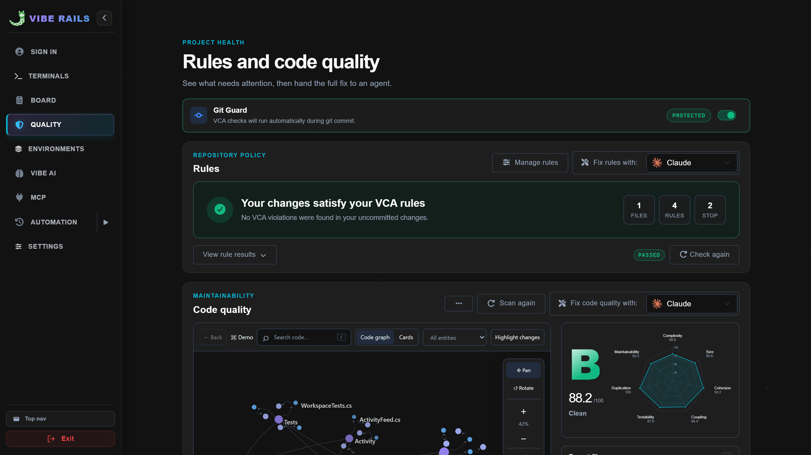
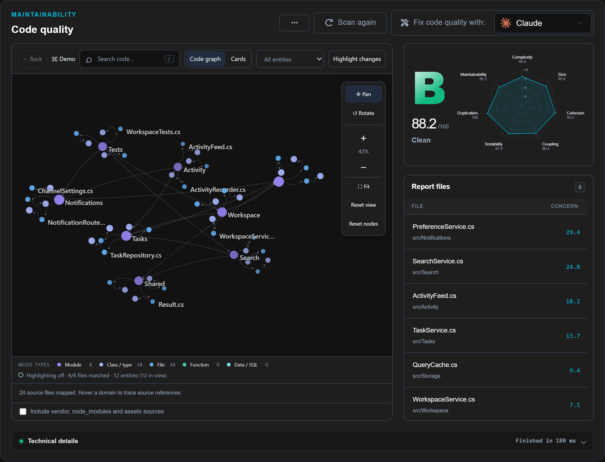
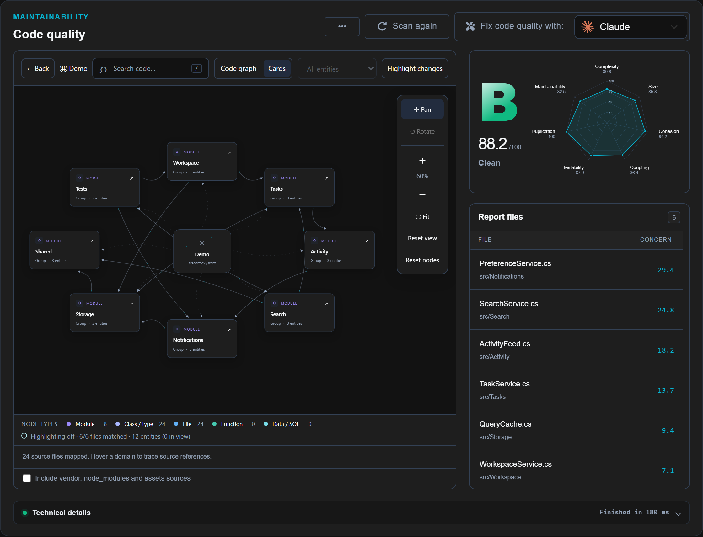
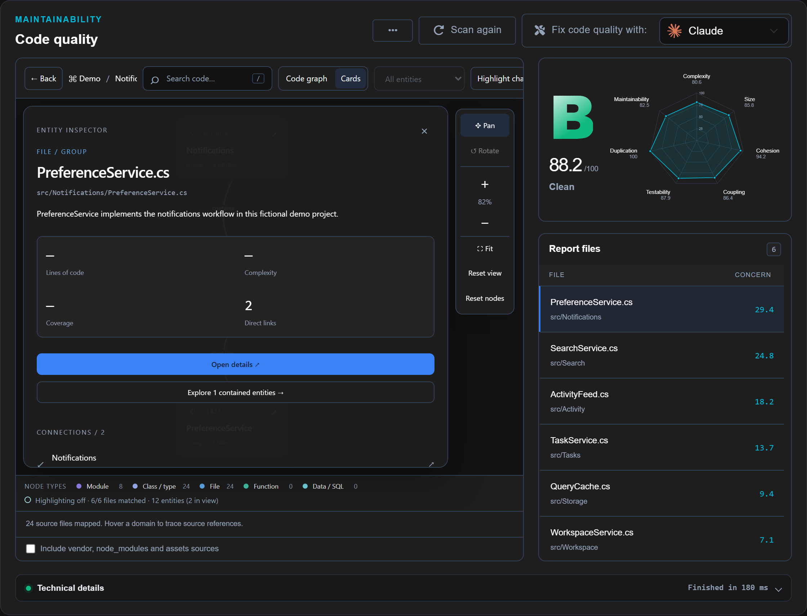
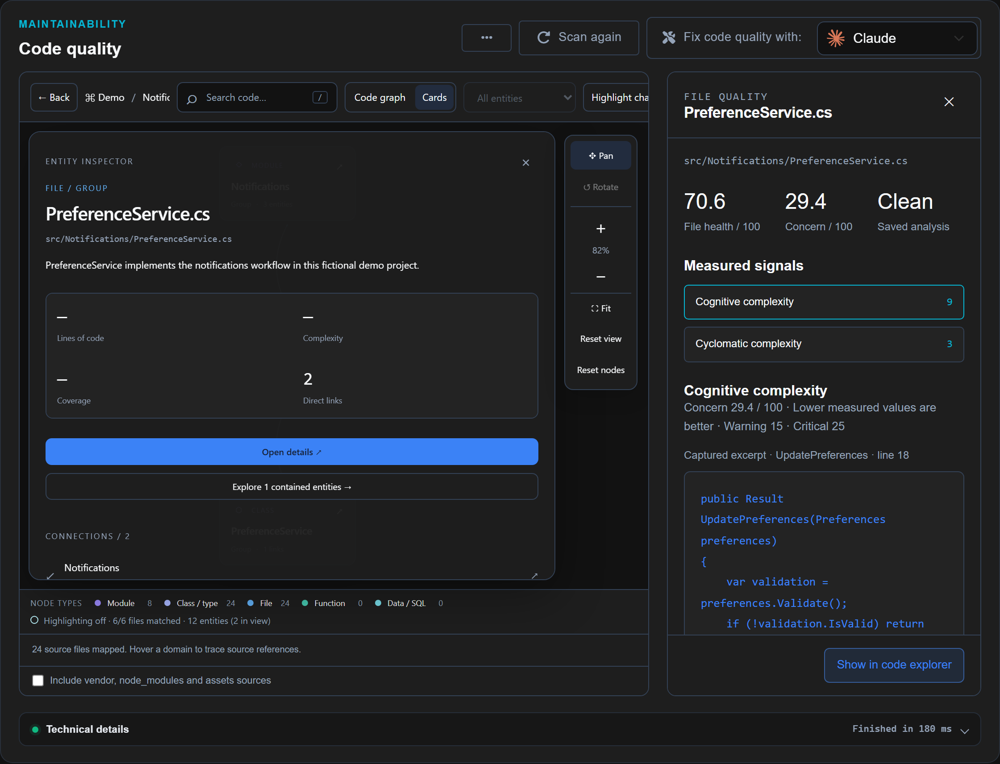
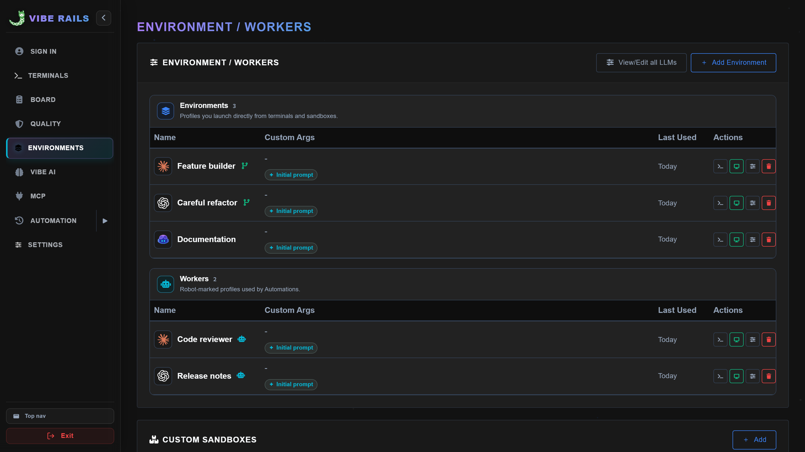
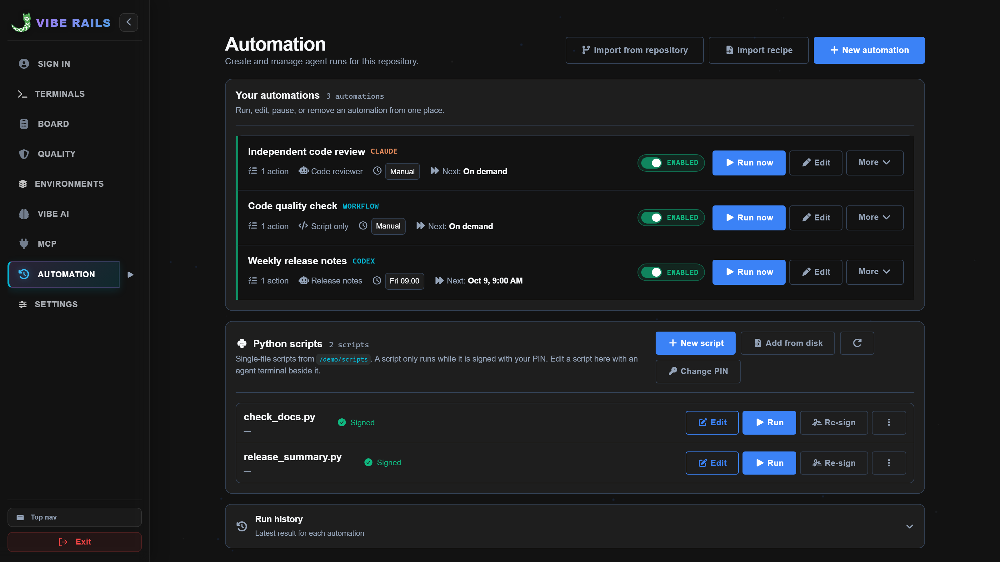
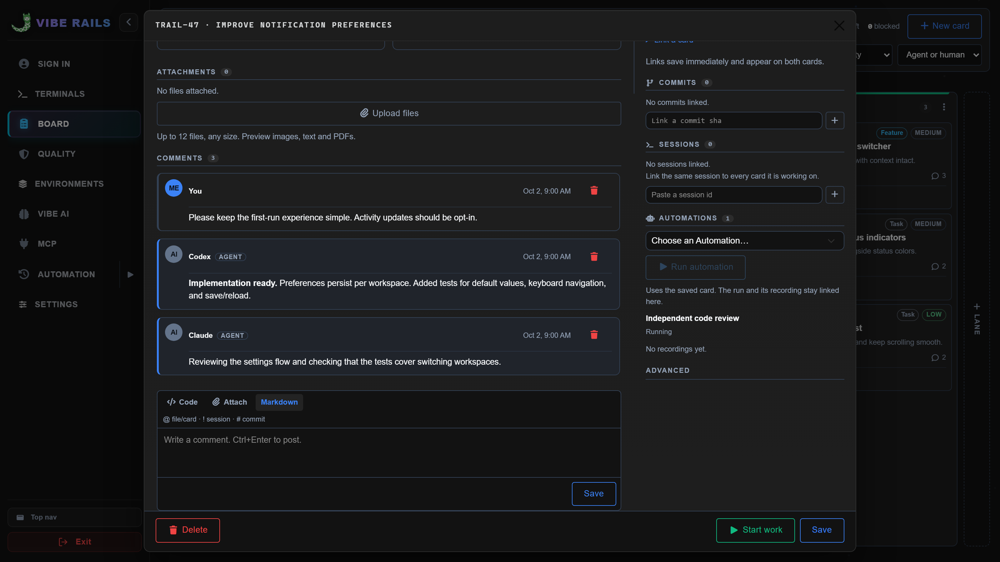
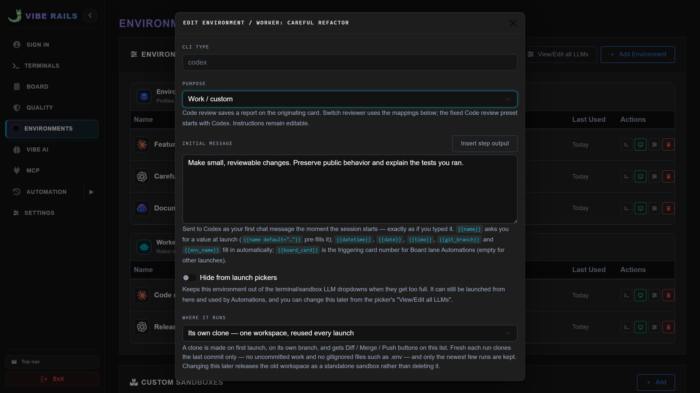
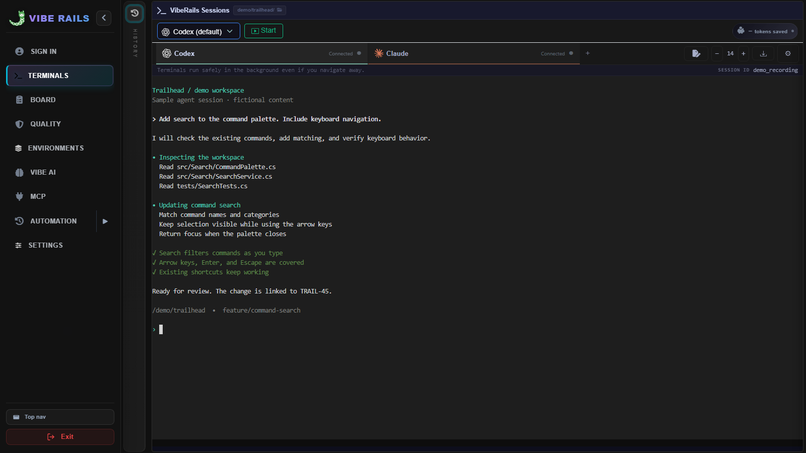
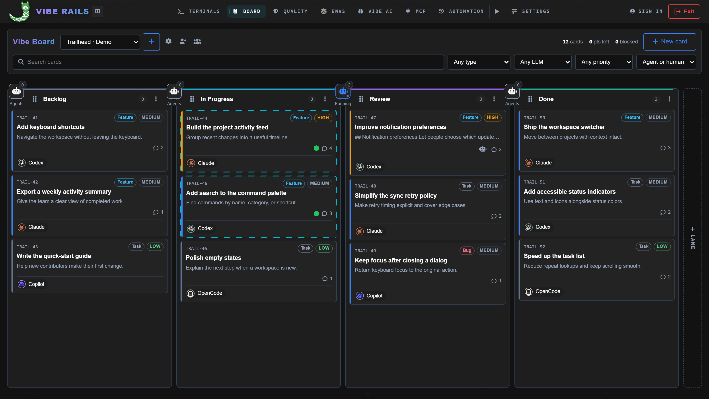